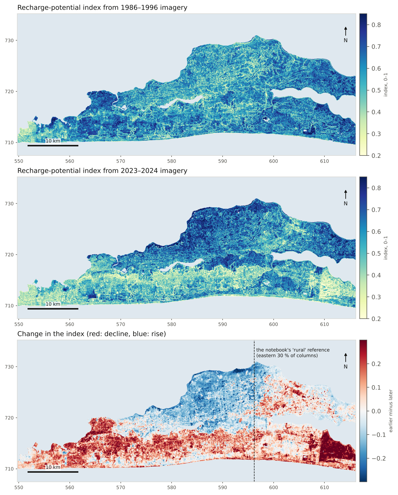
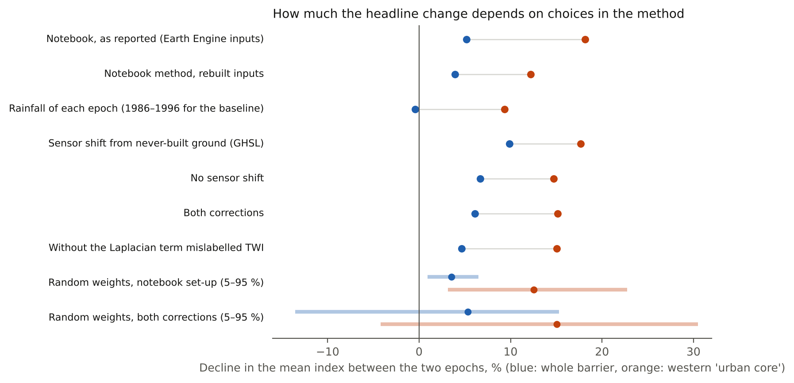
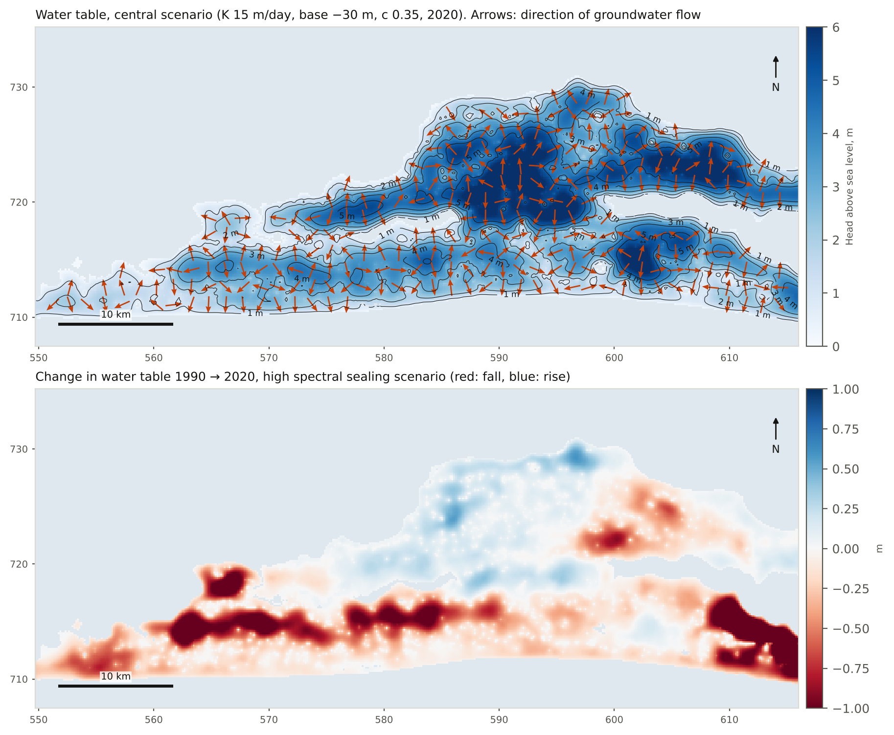
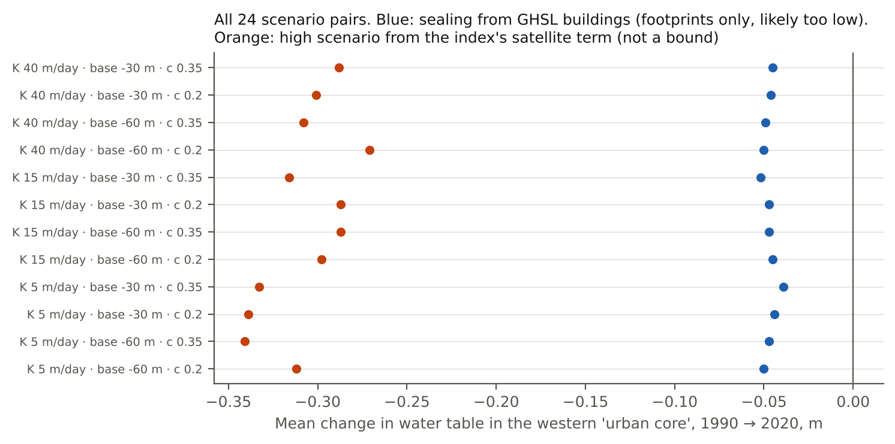

Urban sealing and the shallow water table of the Lekki–Epe barrier, Lagos, 1986–2024
David OloyedeNovember 2026
Abstract
We ask how much the land surface of the Lekki–Epe barrier in Lagos has sealed over since the late 1980s, how reliable the satellite evidence for that is, and what the sealing could do to the shallow water table beneath it. We rebuild, from open data, a recharge-potential index that an earlier version of this study computed from Landsat-5 (1986–1996) and Sentinel-2 (2023–2024) imagery, test how its change depends on each choice in its construction, compare it with the GHSL built-up record, and run a steady-state MODFLOW 6 model of the barrier as a set of scenarios. The index falls by 3.9 % over the barrier and 12.2 % in its western part; the decline in the west appears in every single change to the method we tested and in 91 % of 2,000 random weightings, but its size ranges widely and the barrier-wide change reverses sign when each epoch is given its own rainfall. The index falls where GHSL maps new buildings (Spearman ρ −0.66). In the model, groundwater flows from the middle of the barrier to the lagoons and the sea, and most recharge leaves through seepage at the surface, which holds the water table near the ground. From 1990 to 2020 the mean water table in the western barrier falls by 4–5 cm with sealing taken from GHSL buildings and by 27–34 cm in a high scenario taken from the satellite index. No groundwater observations were available, so the model is not calibrated; its results are differences between scenarios.
Keywords: urban sealing; groundwater recharge; coastal aquifer; MODFLOW 6; Landsat; Sentinel-2; GHSL; Lagos
1. Introduction
Rain that falls on open sand soaks in and recharges a shallow water table; rain that falls on roofs and roads mostly runs off. Where a city spreads over a sandy coastal barrier, sealing the surface could therefore lower the water table, and with it the freshwater held above the sea. Testing this needs three things: a record of how much the surface has sealed, an estimate of how much rain reaches the water table, and a description of how the aquifer moves water to the sea. In Lagos the first can come from satellites, the second only partly, and the third not at all from open data.
An earlier version of this study combined five layers into a recharge-potential index with fixed weights, reported an 18.1 % loss of recharge across the barrier and more than 45 % in its urban core, and wrote, but did not run, a MODFLOW 6 model. An audit found that the notebook itself had printed 5.2 % and 18.1 %, that these were changes in an index, not in recharge, that the model files could not have run meaningfully (recharge in millimetres per year in a model set in metres and days, no boundary conditions, no hydraulic conductivity) and that the satellite export the notebook read had never been stored.
We ask three questions. How much has the surface sealed, and how robust is the satellite evidence? Does it agree with an independent built-up record? And, under the range of aquifer properties and sealing estimates that cannot be ruled out, how much could the sealing move the water table?
2. Data and methods
2.1 Study area
The study area is the land of the Lekki–Epe barrier between the Lagos and Lekki lagoons and the Atlantic Ocean, inside the box 3.45–4.05° E, 6.40–6.65° N, on a 30 m grid in WGS 84 / UTM zone 31N: 769 km² of land. Following the earlier study, the western 45 % of the grid (222 km² of land) is called the western barrier or “urban core” in comparisons; it is a column cut, not a mapped urban boundary.
2.2 Data
Every input is read from open sources and rebuilt by a script (Section 6). Imagery: Landsat-5 TM Collection 2 Level 2 surface reflectance (U.S. Geological Survey, 2020), November–March 1986–1996, 29 scenes with clear pixels, cloud and shadow masked and combined as a per-band median; Sentinel-2 Level-2A, November 2023–March 2024, 14 scenes, scene classification classes 4–7 kept. Both were read from Microsoft Planetary Computer. From them we compute the normalised difference built-up index (NDBI; Zha et al., 2003), the vegetation index (NDVI) and the modified normalised difference water index (Xu, 2006). Elevation: Copernicus DEM GLO-30 (European Space Agency, 2022), a digital surface model that includes buildings and trees. Rainfall: CHIRPS v2.0 (Funk et al., 2015), mean annual totals for 1986–1996 (1,703 mm on the barrier) and 2019–2023 (1,741 mm). Built-up area: GHSL GHS-BUILT-S R2023A (Pesaresi, 2023), the built-up surface fraction of each 3-arc-second cell in 1990 and 2020. GHSL uses a different algorithm from this study but partly the same Landsat archive, so agreement with it is a cross-check, not independent validation.
2.3 Recharge-potential index
The index is the earlier study’s weighted sum of five layers, each scaled to 0–1 between its 2nd and 98th percentiles: permeability (1 − NDBI; weight 0.30), slope (0.25), a surface-curvature term (0.20), rainfall (0.15) and vegetation (0.10). The curvature term is a smoothed negative Laplacian of the surface model; the earlier study called it a topographic wetness index, which it is not (Beven & Kirkby, 1979). To match the two sensors, the earlier study shifted the Landsat indices so that the eastern 30 % of the grid, assumed unchanged, showed no change. We reproduce this method line by line on the rebuilt inputs and then change one choice at a time: the rainfall of each epoch instead of 2019–2023 for both; a sensor shift taken from cells GHSL maps as never built; no shift; the curvature term removed; and 2,000 random weight sets drawn from a flat Dirichlet distribution, applied to the method with both corrections.
2.4 Groundwater model
We model the barrier as one unconfined sand layer with MODFLOW 6 (Langevin et al., 2017) built with FloPy (Bakker et al., 2016), steady state, on 150 m cells. Water cells next to the land are held at 0 m (the lagoons and the sea at mean sea level; tides and lagoon set-up are ignored); cells off the barrier are inactive. The top is the 10th percentile of the 30 m surface model in each cell, which reduces but does not remove the effect of buildings and trees. A drain at the top of every land cell lets water seep out where the water table reaches the ground. Recharge is c × P × (1 − s), with P the CHIRPS rainfall of the epoch, s the sealed fraction and c the share of rain on unsealed ground that reaches the water table.
The aquifer’s properties are not known to this study, so they are scenarios: hydraulic conductivity 5, 15 or 40 m per day, a flat base at −30 or −60 m, and c of 0.20 or 0.35. The sealed fraction is taken two ways: from GHSL buildings, which miss roads and paving and are likely too low, and from the index’s own permeability term taken at face value, a high scenario that is not a measured fraction and not a strict bound (in 36 % of model cells its 1990–2020 change is smaller than GHSL’s). Each of the 48 runs (12 parameter sets, 2 sealing estimates, 2 epochs) uses today’s terrain and today’s land and water masks, so the comparison is today’s barrier with 1990 sealing against today’s barrier with 2020 sealing. A second set of runs varies what the scenarios hold fixed: the drain conductance (connection length 1, 10 and 100 m), the drain elevation (at the top, 0.5 m and 1.0 m below it) and how the top is taken from the surface model (2nd, 10th and 50th percentile).
The solver settings were checked against the Dupuit–Forchheimer solution for a strip of aquifer between two water bodies with uniform recharge (Bear, 1972): the largest head difference was 0.009 m. That test has no seepage drains, so it checks the solver, not the seepage set-up.
2.5 What the model can and cannot say
No water levels, abstraction records, aquifer tests or salinity measurements were available, so the model cannot be calibrated or validated, and absolute heads are illustrative. Its results are the differences between scenarios. It has no variable-density flow and says nothing about the depth of salt water.
3. Results
3.1 The satellite evidence for sealing
Rebuilt with the earlier method, the index falls from a mean of 0.57 to 0.54: by 3.9 % over the barrier and 12.2 % in the western barrier, against 5.2 % and 18.1 % in the earlier notebook. The absolute level differs from the notebook’s (0.43) because the inputs differ; since the terrain terms are identical in both epochs and sit in the denominator, the percentages partly reflect the index’s constant terms, not change. About 81 % of the change in the mean comes from the permeability term.

The largest single decline lies in the south-east, inside the zone the earlier study assumed unchanged; GHSL’s built-up fraction there rose from 0.6 % to 1.5 %. The reference was not stable.
3.2 How robust the change is
Giving each epoch its own rainfall turns the barrier-wide decline into a rise of 0.4 %, because 1986–1996 was drier, and leaves a decline of 9.3 % in the west. Taking the sensor shift from never-built ground gives 9.9 % and 17.7 %; no shift gives 6.7 % and 14.7 %; removing the curvature term gives 4.7 % and 15.1 %. With both corrections, the declines are 6.1 % and 15.2 %. Across 2,000 random weight sets with both corrections, the western barrier declines in 91 % of sets and the whole barrier in 75 %; the western change runs from −4.2 % to 30.5 % (5th–95th percentile; negative values are rises).

The direction of the change in the west is consistent; its size is not, and the barrier-wide direction depends on the rainfall used.
3.3 Comparison with GHSL
Over 8,278 blocks of 300 m, the change in the index falls as the gain in GHSL built-up fraction rises (Spearman ρ −0.66; Figure 4). GHSL’s built-up share of the western barrier rose from 9 % in 1990 to 17 % in 2020. The built-up index also reads bright bare ground as built: 59 km² scores as built-up in 2024 where GHSL maps no buildings, which includes bare sand, cleared land, roads and paving.

3.4 The water table
All 48 scenario runs converged, with a water-budget discrepancy below 0.01 % of inflow. In every scenario groundwater flows from the middle of the barrier to the lagoons and the sea, across the barrier rather than along it (Figure 5). The water table lies 1.2–4.4 m below the top (medians across scenarios), and 16–80 % of recharge seeps out at the surface; the rest reaches the lagoons and the sea.

From 1990 to 2020 the mean water table in the western barrier falls by 4–5 cm with GHSL sealing and by 27–34 cm in the high spectral scenario (Figure 6). In the high scenario the largest fall in any cell is 0.8–3.7 m, and 26–32 % of cells rise, because rainfall was higher in 2019–2023. Varying the model’s structure (drain conductance and elevation, and how the top is taken) gives 4–6 cm and 26–38 cm, with 53–91 % of recharge seeping out. Conductivity and aquifer thickness change the answer very little.

4. Discussion
The satellite record supports one claim with confidence: the western barrier has sealed over since the late 1980s, and the change agrees with a separate built-up product. It does not support a precise percentage. The earlier figures came from an index whose size depends on its weights, on the rainfall used and on a sensor reference that turned out to have changed itself; reported as a recharge loss, they also implied a physical meaning the index never had.
The model suggests why sealing may matter less for the water table than the index implies. In every scenario the modelled water table sits close to the ground and most recharge leaves as seepage to low ground, swamps and drainage. A water table held there by seepage responds weakly to a change in recharge, so the head change depends mainly on how sealing is measured and on the seepage set-up, not on the aquifer’s conductivity or thickness. This is a property of the model as well as, possibly, of the barrier. If groundwater abstraction from the many private boreholes on the barrier has already lowered the water table below the ground, seepage would be smaller and the response to sealing larger than modelled. Abstraction is probably the larger influence on heads in the west, and no data on it were available.
The flow pattern is a more robust result than the head changes: in every scenario groundwater moves outwards from the middle of the barrier to the lagoons and the sea. The earlier study’s “percolation corridor” along the barrier, a least-cost path across the index, does not describe groundwater movement.
Four limits matter most. There are no groundwater observations, so nothing in the model is checked against reality. Sealing is not measured: building footprints are too low and the satellite index is a relative score. The surface model includes buildings and trees. And the model is steady and has no salt water, so it cannot address saltwater intrusion.
5. Conclusions
The western Lekki–Epe barrier has sealed over since the late 1980s, and the satellite evidence for that is consistent with GHSL, but its magnitude cannot be pinned down from an index of this kind. In a groundwater model run across the plausible range of aquifer properties, the water table lies near the ground, groundwater flows across the barrier to the lagoons and the sea, and the 1990–2020 change in sealing lowers the mean water table in the west by centimetres to a few decimetres. Turning this into a hydrogeological result needs water-level observations, aquifer tests and abstraction estimates, and, before anything is said about salt water, salinity data and a variable-density model.
6. Data and code
Every number in this paper is read from
outputs/index_results.json,
outputs/modflow_results.json,
outputs/structure_sensitivity.json and
outputs/modflow_heads.npz by
code/pipeline/p06_build_paper.py, which stops if a
statement in the text is no longer true. The scripts in
code/pipeline/ rebuild every input from open data
(p01), the index and its sensitivity (p02),
the groundwater model (p03, p03b, checked by
test_mf6_dupuit.py) and the figures (p04). The
earlier notebook, figures and report are kept in the repository as the
record of the first version.
References
Bakker, M., Post, V., Langevin, C. D., Hughes, J. D., White, J. T., Starn, J. J., & Fienen, M. N. (2016). Scripting MODFLOW model development using Python and FloPy. Groundwater, 54(5), 733–739. https://doi.org/10.1111/gwat.12413
Bear, J. (1972). Dynamics of fluids in porous media. American Elsevier.
Beven, K. J., & Kirkby, M. J. (1979). A physically based, variable contributing area model of basin hydrology. Hydrological Sciences Bulletin, 24(1), 43–69. https://doi.org/10.1080/02626667909491834
European Space Agency. (2022). Copernicus DEM. https://doi.org/10.5270/ESA-c5d3d65
Funk, C., Peterson, P., Landsfeld, M., Pedreros, D., Verdin, J., Shukla, S., Husak, G., Rowland, J., Harrison, L., Hoell, A., & Michaelsen, J. (2015). The climate hazards infrared precipitation with stations—a new environmental record for monitoring extremes. Scientific Data, 2, 150066. https://doi.org/10.1038/sdata.2015.66
Langevin, C. D., Hughes, J. D., Banta, E. R., Niswonger, R. G., Panday, S., & Provost, A. M. (2017). Documentation for the MODFLOW 6 groundwater flow model (Techniques and Methods 6-A55). U.S. Geological Survey. https://doi.org/10.3133/tm6A55
Pesaresi, M. (2023). GHS-BUILT-S R2023A - GHS built-up surface grid, derived from Sentinel2 composite and Landsat, multitemporal (1975–2030). European Commission, Joint Research Centre (JRC). https://doi.org/10.2905/9F06F36F-4B11-47EC-ABB0-4F8B7B1D72EA
U.S. Geological Survey. (2020). Landsat 4–5 Thematic Mapper Level-2, Collection 2. https://doi.org/10.5066/P9IAXOVV
Xu, H. (2006). Modification of normalised difference water index (NDWI) to enhance open water features in remotely sensed imagery. International Journal of Remote Sensing, 27(14), 3025–3033. https://doi.org/10.1080/01431160600589179
Zha, Y., Gao, J., & Ni, S. (2003). Use of normalized difference built-up index in automatically mapping urban areas from TM imagery. International Journal of Remote Sensing, 24(3), 583–594. https://doi.org/10.1080/01431160304987